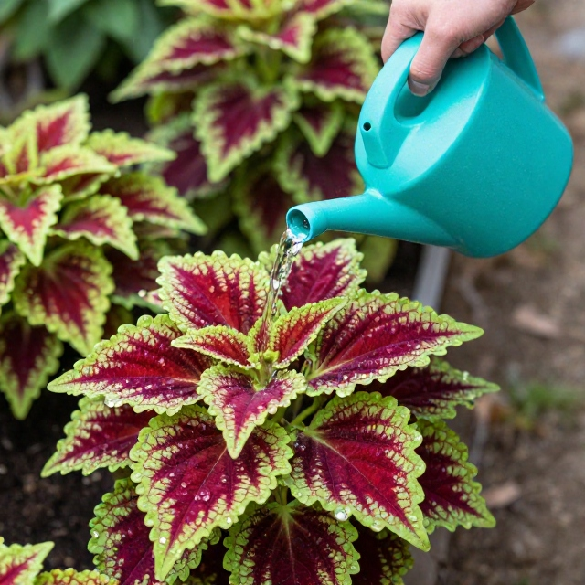
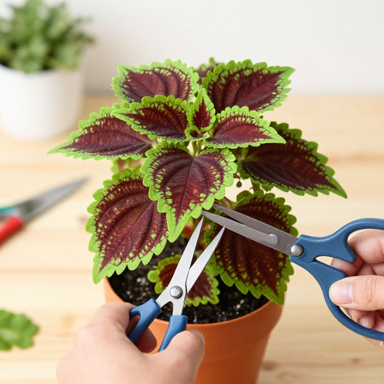

Колеус — это одно из самых ярких, неприхотливых и благодарных растений, способное украсить как домашний подоконник, так и садовую клумбу. Его ценят не за скромное цветение, а за потрясающее разнообразие бархатистых листьев, которые могут сочетать в себе оттенки бордового, зеленого, розового, желтого и фиолетового цветов. Чтобы колеус круглый год радовал вас пышной кроной и насыщенными красками, важно разобраться в четырех главных аспектах заботы о нем: правильном поливе, регулярной обрезке, легком черенковании и особенностях ухода в холодное время года
Часть 1. Секреты идеального полива: как не засушить и не залить

Колеус относится к влаголюбивым растениям, так как его сочные стебли и
крупные листья испаряют много влаги. Однако в вопросе полива важен
четкий баланс.
• Режим полива летом: В жаркие дни колеус пьет очень много воды. Грунт
должен оставаться постоянно слегка влажным. Если растению не хватает
влаги, оно мгновенно сообщит вам об этом: листья повиснут, как тряпочки,
а стебли потеряют тургор. К счастью, после обильного полива колеус
обычно восстанавливается за пару часов.
• Режим полива зимой: В холодное время года метаболизм растения
замедляется. Полив сокращают, давая верхнему слою почвы (примерно на 1–2
см) просохнуть.
• Качество воды: Используйте только отстоявшуюся воду комнатной
температуры. Полив холодной водой из-под крана вызывает у цветка шок,
что может привести к сбрасыванию листьев или загниванию корней.
• Опасность перелива: Главный враг колеуса — застой воды в поддоне. Если
корни постоянно находятся в болоте, они начинают гнить. Стебель у
основания чернеет, и растение погибает. Всегда сливайте излишки воды из
поддона через 15–20 minutes после полива.
• Влажность воздуха: Колеус любит опрыскивания, особенно в летний зной и
зимой при работающем отоплении. Опрыскивайте его мягкой водой в утренние
или вечерние часы, чтобы капли на листьях не сработали как линзы под
прямым солнцем
Часть 2. Обрезка и формование: секрет пышного куста

Без обрезки колеус быстро превращается в длинную, вытянувшуюся «палку» с
редкими листьями на макушке. Чтобы получить плотный, аккуратный и
пушистый кустик, его нужно регулярно формировать.
• Первая прищипка: Начинайте формировать растение, пока оно еще совсем
молодое. Как только сеянец или укорененный черенок выпустит 3–4 пары
настоящих листьев, аккуратно отщипните (или срежьте ножницами) самую
верхнюю точку роста. Это стимулирует пробуждение спящих почек в пазухах
листьев, и колеус пустит боковые побеги.
• Регулярное кущение: По мере роста боковых веточек повторяйте
процедуру: прищипывайте их верхушки после каждых 2–3 пар листьев. Таким
образом, куст будет разрастаться в ширину, приобретая форму шара.
• Омолаживающая обрезка: Весной, после долгой зимы, домашние
колеусы часто выглядят изросшимися и оголенными снизу. Не бойтесь
кардинально обрезать их. Можно срезать практически всю верхнюю часть,
оставив пеньки высотой 5–7 см с парой почек. Растение очень быстро
выпустит свежую, сочную зелень.
• Удаление цветоносов: Колеус выпускает скромные стрелки с мелкими
сиреневыми или голубыми цветами. Они не представляют декоративной
ценности, но забирают у растения колоссальное количество сил, из-за чего
листья начинают блекнуть и мельчать. Удаляйте цветочные стрелки сразу же
при их появлении
Часть 3. Черенкование: самый простой способ размножения
Колеус — чемпион по скорости и легкости укоренения. Если вы хотите
размножить понравившийся сорт или обновить старое растение, черенкование
— идеальный выбор. Приступать к этому процессу можно в любое время года,
но активнее всего корни растут весной и летом. • Подготовка черенка:
Срежьте здоровый, крепкий верхушечный побег длиной 8–10 см. Желательно,
чтобы на нем было 3–4 пары листьев. Срез делайте чистым ножом или
ножницами чуть ниже листового узла.
• Удаление лишних листьев: Полностью оборвите самую нижнюю пару листьев,
так как эта часть стебля будет находиться в воде или грунте. Если
остальные листья слишком крупные, их можно укоротить наполовину, чтобы
уменьшить испарение влаги.
• Укоренение в воде: Поставьте черенок в стаканчик с чистой отстоявшейся
водой. Для профилактики гнили можно бросить туда таблетку
активированного угля. Поставьте стакан в теплое и светлое место. Уже
через 4–7 дней вы увидите первые белые корешки. Когда они подрастут до
2–3 см, черенок можно высаживать в горшок с землей.
• Укоренение в грунте: Можно высаживать черенки сразу в легкий субстрат
(торф пополам с перлитом). Опустите черенок вглубь до оставшихся
листьев, уплотните грунт, полейте и накройте сверху прозрачным
стаканчиком или пакетом, создавая мини-тепличку. Проветривайте ее раз в
день. Через 1,5–2 недели растение укоренится и тронется в рост
Часть 4. Зимовка и уход в холодные времена года
Осень и зима — самый сложный период для колеуса, особенно в условиях
умеренного климата. Это тропическое растение совершенно не выносит
холода (при температуре ниже +10°C оно погибает) и сильно страдает от
нехватки солнечного света.
• Спасение садовых колеусов: Если ваши колеусы росли летом на улице или
на балконе, в открытом грунте зимовать они не смогут. Заносить огромные
кусты в дом не всегда удобно — они часто болеют от смены климата. Лучший
выход: в августе-сентябре нарезать с уличных кустов свежие черенки,
укоренить их и забрать в дом молодые, здоровые растения.
• Борьба за свет: Зимой колеусы блекнут. Их яркие узоры могут исчезнуть,
превратившись в блекло-зеленый цвет, а междоузлия сильно вытянутся.
Чтобы этого избежать, поставьте горшки на самые светлые южные или
восточные подоконники. Идеальное решение — использование фитолампы для
досвечивания (световой день должен составлять 12–14 часов).
• Температурный режим и сквозняки: Оптимальная температура для зимнего
содержания — около +16…+18°C. Берегите колеус от ледяного воздуха при
проветривании окон. Также следите, чтобы горшок не стоял на холодном
подоконнике (под него можно подложить пенопласт или деревянную
подставку), иначе корни застудятся и сгниют.
• Отопительный сезон:
Горячий воздух от батарей высушивает листья, провоцируя появление
паутинного клеща. Отодвиньте растение подальше от радиаторов,
используйте увлажнитель воздуха или ставьте горшки на поддоны с влажным
керамзитом.
• Отмена подкормок: С октября по февраль полностью прекратите подкормку
удобрениями, чтобы не стимулировать слабый рост вытянувшихся бледных
побегов. Возобновлять подкормки нужно весной, когда увеличится световой
день